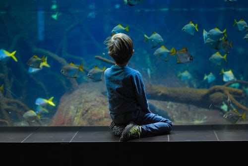
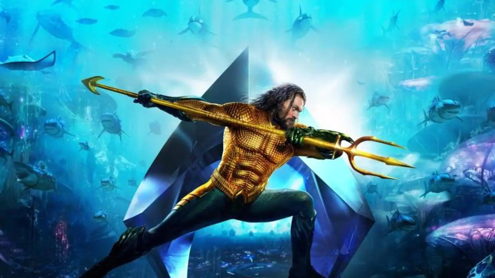

Ever wondered how would be life if we can breath underwater ... moreover control the flow of water.
Sounds amazing right! Lets meet a person who do this
Presenting
AQUAMAN

My Favourite
This feature of acquman gives him power to cotrol water flow , breath inside water it amazes me alot as a child
I use to desire to walk on the water and drive into the deepest ocean and see beautiful creature and their lives.
Also I like the resemblense of his to Lord Shiva.
Curiousity within my mind incresed as as saw the similarity.